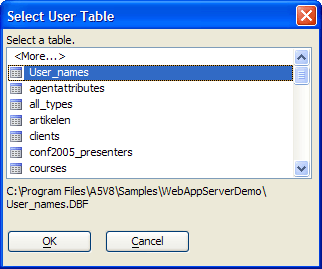

Select User Table Dialog
DEAD. OBSOLETE
The Select User Table dialog allows you to navigate to and select a table with a structure appropriate for use as a User Table for a Login Security component.

Refer to Map User Table dialog for a definition of the fields required by a User Table.
Limitations
Web publishing applications only.
See Also
Creating Login Components, Defining Page Security, Map User Table Dialog